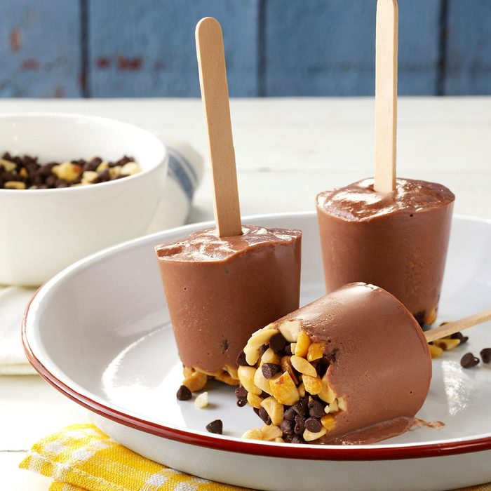

Rocky Road Fudge Pops
Total Time: 20 min Prep: 20 min + freezing
These frozen treats are simple to prepare and feature a special chocolate and peanut topping.

Ingredients:
- 2-1/2 cups 2% milk
- 1 package (3.4 oz) cook-and-serve chocolate pudding mix
- 1/2 cup chopped peanuts
- 1/2 cup miniature semisweet chocolate chips
- 1/2 cup marshmallow creme
Tools for the popsicle:
- 12 disposable plastic cups
- 12 wooden pop sticks
Directions:
- In a large microwave-safe bowl, whisk milk and pudding mix. Microwave, uncovered, on high for 4-6 minutes or until bubbly and slightly thickened, stirring every 2 minutes. Cool for 20 minutes, stirring several times.
- Meanwhile, combine peanuts and chocolate chips; divide among plastic cups. Stir marshmallow creme into pudding; spoon into cups. Insert wooden pop sticks; freeze.
Nutrition Facts:
1 pop: 140 calories, 7g fat (3g saturated), 7mg cholesterol, 64mg sodium, 18g carbohydrate (14g sugar, 1g fiber), 4g protein